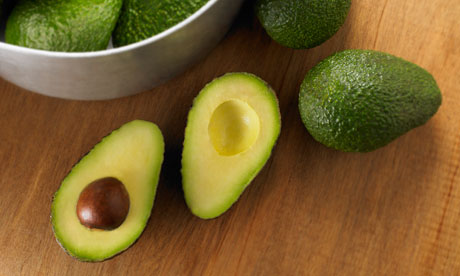

Ingredients:
- Eggs
- Bacon
- Cheddar Cheese
- Tortilla wrap
- Avacado
- Milk
- Salt and pepper
Recipe:
- In a small bowl, whisk eggs with milk
- Cook bacon on skillet and remove
- Scramble eggs in skillet and remove
- In tortilla, place shredded cheese, bacon, eggs, and cut avacado
- Roll into burrito, and enjoy
Breakfast Burrito History
Mike started making these as a breakfast regular when he and Marissa first started dating. They quickly became one of their go to breakfasts that they still make on the weekends.